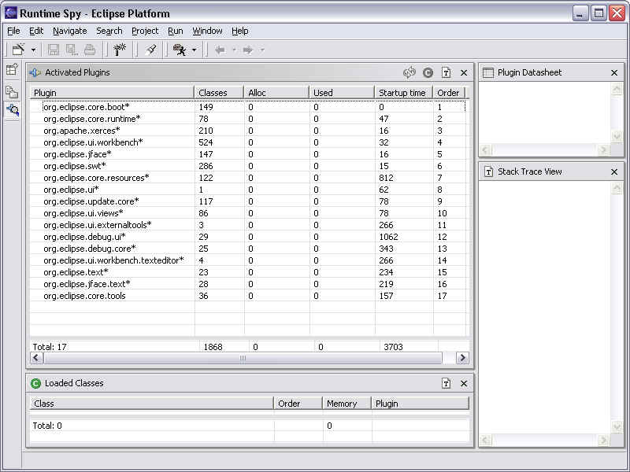

Watching Eclipse Start Up
Jim des Rivières, OTI
December 2, 2002
I've always found it interesting to watch the dynamic behavior of complex
systems. Like taking a train that cuts through towns and cities, you get to see
things that you don't normally see. And occasionally, you see things you wish
weren't there, like when the train passed through a slum.
The newly-released Core Tools (linked off the Eclipse
Performance Page) make it easy to see how Eclipse is behaving. I haven't
ventured far yet, but I through I'd write a travelogue of what I did see on the
very briefest of journeys: starting up Eclipse with a completely empty
workspace. So I downloaded and unzipped the latest 2.1 integration build (Eclipse
I20021127), added the Core Tools, copied the default .options file into the
right place, and then launched Eclipse with the -debug option. Because I didn't
want to see the extra excitement generated by having a Welcome editor open, I
closed the editor and exited. When I restarted (again, with -debug), I was
staring at an empty workspace with no open editor.
I immediately opened a new window (Window > New Window) and
switched it to the Runtime Spy perspective (Window > Open Perspective >
Runtime Spy). Resorting the list of active plug-ins in order of activation
reveals the exact sequence in which plug-ins were started up. The first 16 were
all activated on startup (ones with "*" after their name), and
the last one was triggered by opening the Runtime Spy perspective.

Step by Step
Let's retrace the journey, to see what we can learn about how Eclipse starts
up. By selecting one of the activated plug-in and choosing Stack trace
from the context menu, the Stack Trace view shows a Java backtrace of the calls
leading up to the plug-in being activated. With a little head scratching and
surmising, I was able to reconstruct a picture of what had happened.
- org.eclipse.core.boot - It's no surprise that this plug-in is first. It's
job is to boot up the rest of Eclipse.
- org.eclipse.core.runtime - No surprise either. The Core Runtime plug-in
contains most of the mechanisms for loading plug-ins.
- org.apache.xerxes - Xerxes contains the XML parser used to parse
plugin.xml files. Core Runtime explicitly activates it so that it is at the
ready.
- org.eclipse.ui.workbench - This plug-in contains the workbench, so it gets
activated to bring up the Eclipse workbench UI.
- org.eclipse.jface - JFace plays a prime role in any UI.
- org.eclipse.swt - SWT also plays a prime role in any UI.
- org.eclipse.core.resources - The workbench shows resources in the
workspace, which are provided by the Core Resources plug-in.
- org.eclipse.ui - Another part of the Eclipse workbench. This part is
activated in the course of restoring previous workbench UI state.
- org.eclipse.update.core - Now this is a bit of a surprise. Update Core contains
the update manager infrastructure. It is being activated because the workbench
asks it if there are any newly-installed features, so that it can open their
welcome pages. You'd think that this plug-in would not be activated until
the user asks for the update manager (Help > Software Updates). It turns
out that this is a recent enhancement (added in 2.0.2), and the fact that
it triggers premature activation of this plug-in is an unintended consequence.
This is considered a bug (27359),
and will be fixed probably by ensuring that info about newly installed features
is available through Core Boot/Runtime.
- org.eclipse.ui.views - The workbench is instantiating the standard views
that will be visible in the workbench window.
- org.eclipse.ui.externaltools - Another surprise. The External Tools
plug-in is being activated in the course of creating its menu contribution
to the workbench toolbar. An original design goal of Eclipse was to ensure
that workbench menu and toolbar contributions could be collected up and used
to populate menus and toolbars without activating plug-ins. Indeed, that's
why text and image labels are supplied in the plug-in manifest file through
XML markup rather than through code. So this is a bug.
- org.eclipse.debug.ui - A surprise within a surprise! The Debug UI is being
activated by the External Tools plug-in. External Tools uses launches
configurations, which are provided by Debug, and will show up somewhere
under the Run > External Tools. However, I've never run an external tool,
so I don't have any launch configurations. So this seems unreasonably eager.
- org.eclipse.debug.core - The Debug UI plug-in's startup method explicitly
does something to activate Debug Core.
- org.eclipse.ui.workbench.texteditor - The Debug UI plug-in's startup
method explicitly does something to activate Workbench Text Editor. I don't
yet understand whether this is justified, or whether it is something that
could be allowed to happen in due course.
- org.eclipse.text - Text is being brought in because Debug UI is
initializing the debug console. I'm not sure whether this is reasonable.
Although there's no console view in sight, the text infrastructure might be
needed. Still, at this stage, the console is empty. It should be
possible to hold off until the there's something to put in the console.
- org.eclipse.jface.text - JFace Text is being brought in because Debug UI
is initializing the tool tip for the launch history. This strikes me as
jumping the gun - it should be possible to hold off until the tool tip makes
an appearance.
Afterwards, I disabled the org.eclipse.ui.externaltools plug-in (by renaming
its plugin.xml to plugin.off) and restarted Eclipse again. This time, only plug-ins
1-10 were activated, confirming that External Tools is responsible for dragging
Debug into the picture.
Conclusion
Although this tour only took me a couple of minutes to set up, and a couple
of hours to analyze and write up, I already have a better appreciation of how
Eclipse's knee bone is connected to the thigh bone, its thigh bone is connected
to the hip bone, etc. And I can see how these tools open a new window that makes
it very easy to observe the dynamic behavior of Eclipse. Just imagine how much
more interesting things gets when you have projects and files in your workspace
and you actually start to do something.
Clearly, as this quick tour has revealed, there is lots of investigation and
work to be done to streamline Eclipse platform performance. I encourage you to
download the new Core Tools (linked off the Eclipse
Performance Page), and embark on your own journey of discovery.